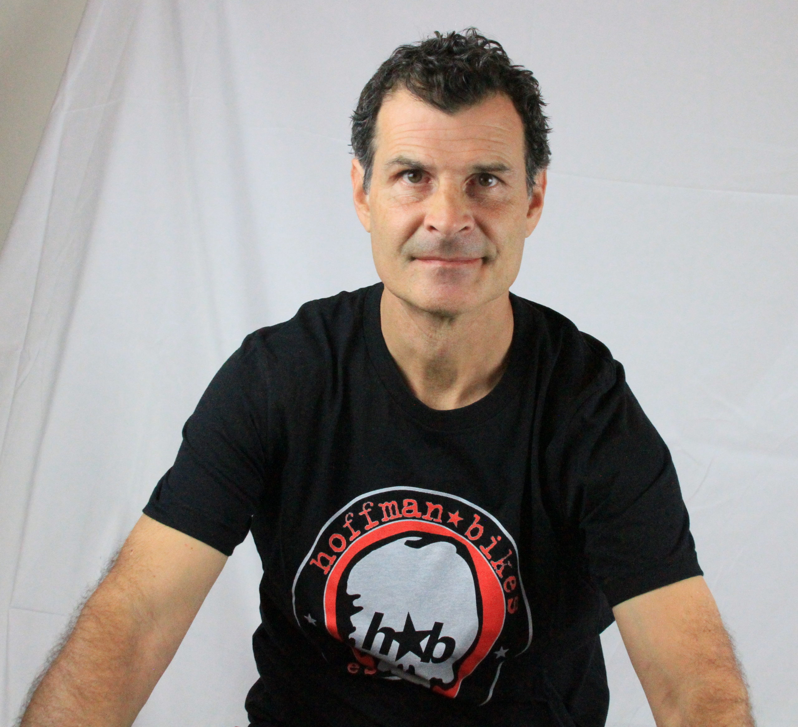
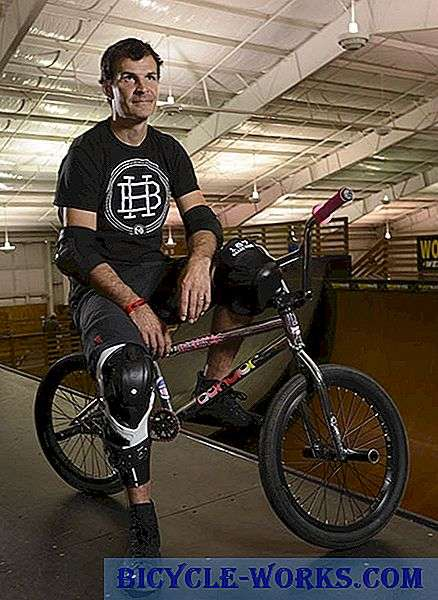
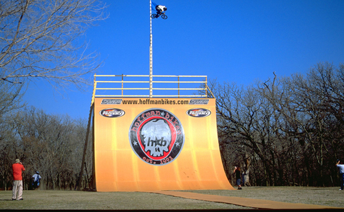
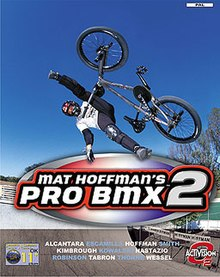
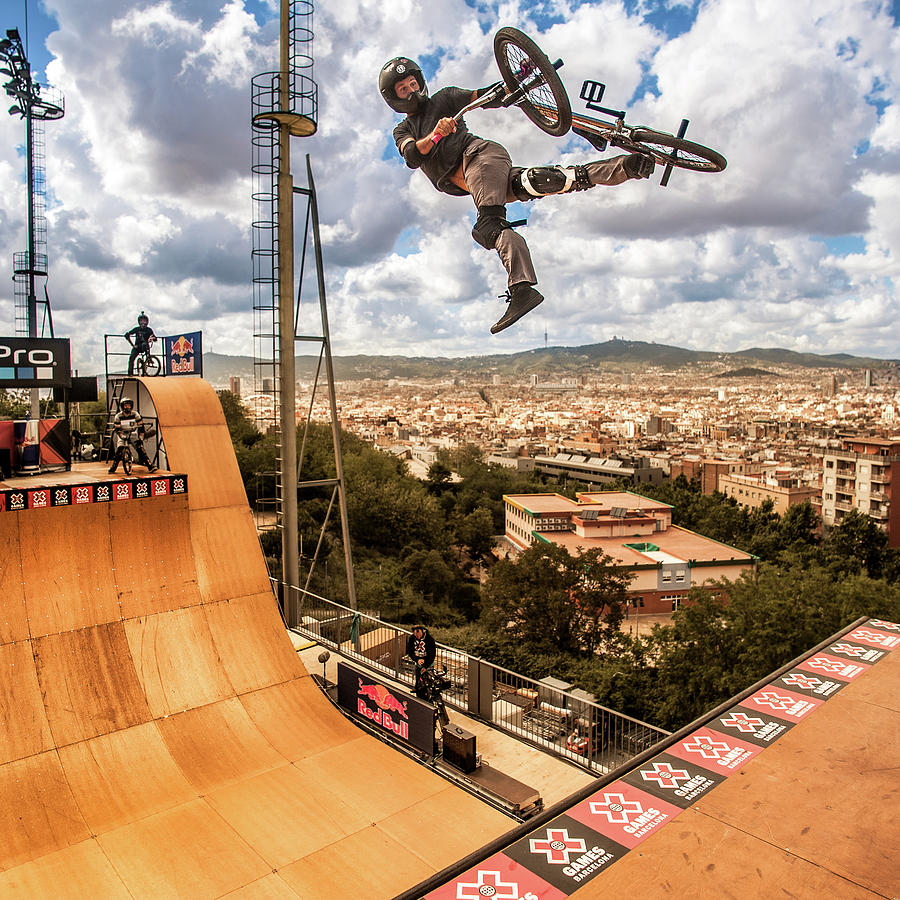

Matthew T. Hoffman (Edmond, Oklahoma, 9 de enero de 1972) es un ciclista profesional de BMX estadounidense, considerado uno de los mejores competidores de la categoría vert ramp de todos los tiempos. Hoffman, quien prefiere ser llamado “Matt” tras agregar la inicial de su segundo nombre al apócope del primero, es apodado “El Cóndor” y es dueño de la empresa Hoffman Bikes en Oklahoma. En el año 2002, Hoffman publicó su autobiografía, titulada The Ride of My Life (literalmente, El viaje de mi vida).
En 1983, cuando Hoffman tenía 11 años, compitió en un concurso de BMX en el Madison Square Garden. Había aprendido a andar en BMX por su cuenta y no tenía otros corredores como referencia. Él recuerda: "Cuando llegué a ese concurso dije 'woah, supongo que voy más alto que todos los demás'".2 En 1987, a la edad de 15 años, Hoffman se convirtió en el SPROO más joven en unirse al circuito de BMX de estilo libre. Un artículo en la revista Ride comentaba: "¿Qué queda por decir sobre un tipo que ignoró todos los límites establecidos y redefinió la conducción vert - a los 15 años [?]". Ganó el primer concurso en el que participó como profesional y se llevó a casa un cheque de $ 2,200 dólares. En 1991, Hoffman alcanzó la división profesional y lanzó tanto Hoffman Promotions como Hoffman Bikes Desarrolló la serie Bicycle Stunt (BS) para dar a los ciclistas un lugar para competir y mostrar sus talentos. ESPN se unió a Hoffman Promotions en 1995 para producir y televisar la serie cada año. El crecimiento de Hoffman Promotions dio origen a la Hoffman Sports Association (H.S.A.), el organismo organizador de los eventos de BMX Freestyle en todo el mundo, como los X Games de ESPN y todos los eventos internacionales de acrobacias en bicicleta de los X Games.
En 1985, Hoffman entró por primera vez en el circuito de Freestyle BMX, como un novato, teniendo apenas 13 años de edad. A los 16 años, era el profesional más joven que el deporte había visto. Un artículo de la revista Ride aseveraba: “¿Qué queda por decir de un tipo que ignoró todos los límites establecidos y redefinió el vert ridding – a los 15 años de edad?” (“What’s left to say about a guy who ignored all established limits and redefined vert riding - at age 15?”). La carrera de Mat incluye haber efectuado un salto de base en su bicicleta lanzándose a 3500 pies de altura desde unos precipicios en Noruega, y en el año 2002 fijó la marca de salto asistido en una bicicleta cuando alcanzó una altura de 26.6 pies sobre una rampa de 24 pies, para una altura total de 50.6 pies (15.68 metros) sobre el suelo, hazaña que apareció reseñada en el Libro Guinness de los Récords en su edición de 2004, sin que se haya conocido algún intento por romper dicha marca (a mayo de 2007). Hoffman es un innovador que ha definido el deporte con la creación de más de 100 piruetas, tales como el 900°, el Flip Fakie (que consiste en una voltereta hacia atrás y un aterrizaje en reversa) y el Flair (voltereta hacia atrás con giro de 180°, aterrizando de frente). Los logros sin paralelo de Hoffman como ciclista se han equiparado a sus logros en el mundo de los negocios. Para 1991, ya había superado el estatus de amateur, tomado la división profesional y llevado el deporte a niveles que se pensaban imposibles, inventando la mayoría de los trucos para vert ramp que existen y se utilizan regularmente en el Freestyle BMX. Frustrado por tener siempre a alguien que condujera su carrera por él, Hoffman abandonó a su principal patrocinador y formó su propia compañía de promoción: Hoffman Promotions. Conformó un equipo con algunos de los mejores exponentes del deporte y comenzó a organizar eventos, entre los que se incluyen el Sprocket Jockey Bicycle Stunt Team.
   